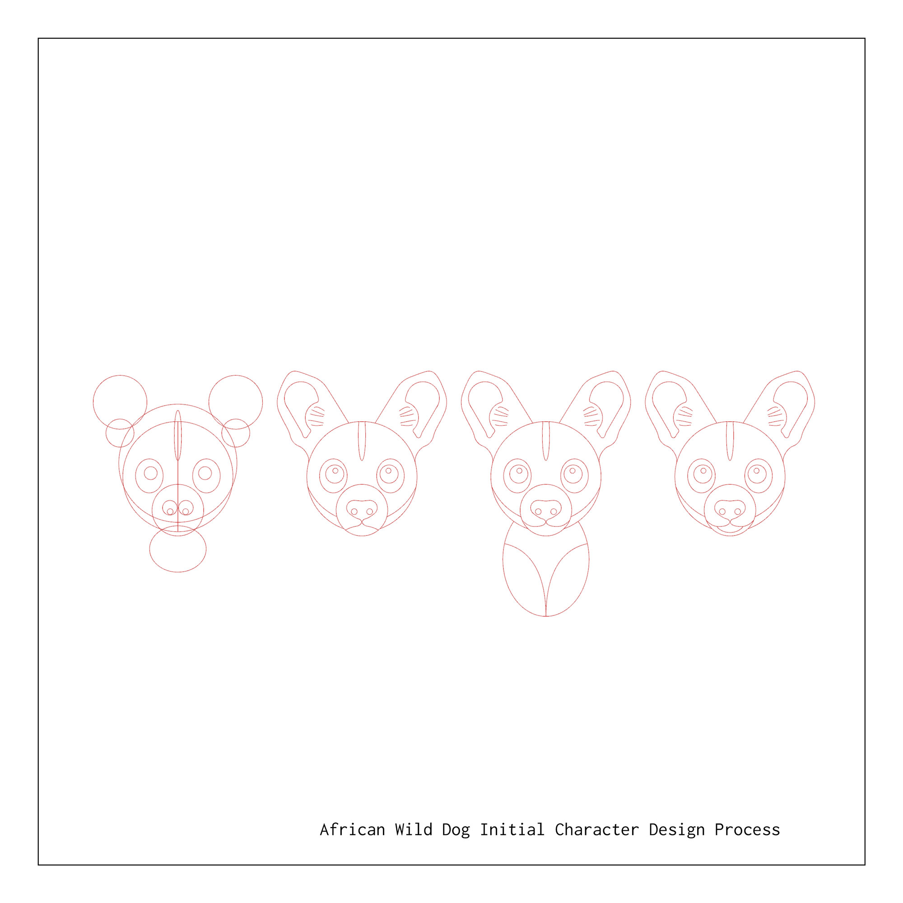
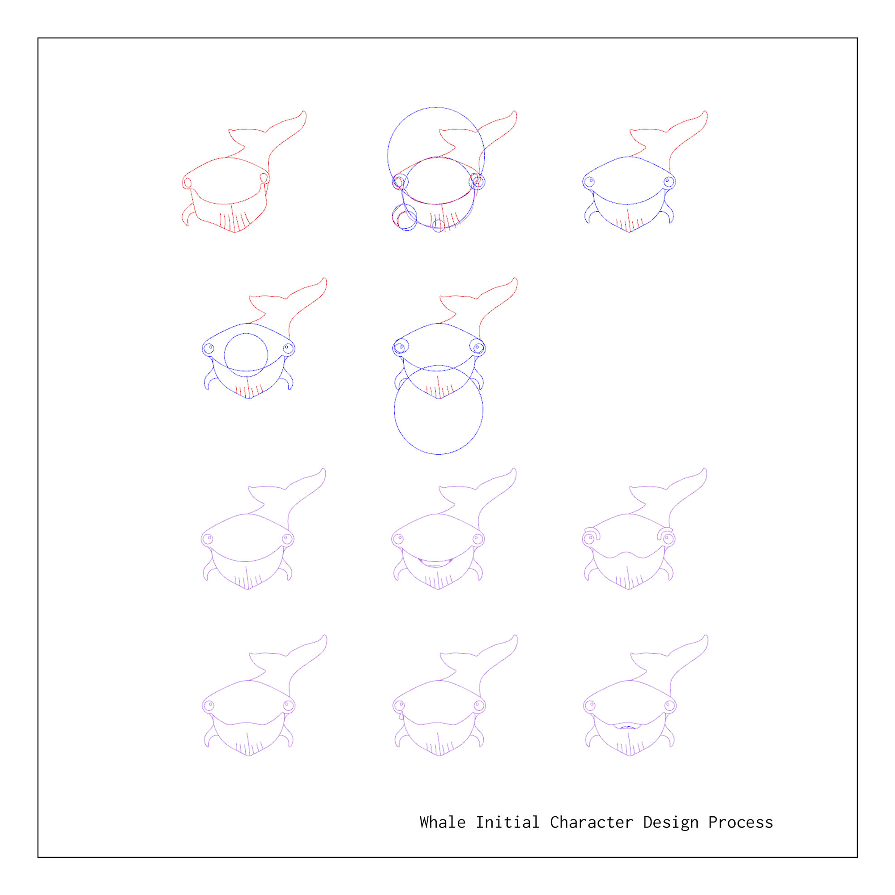
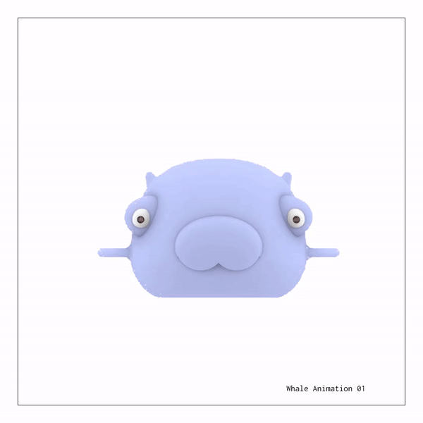
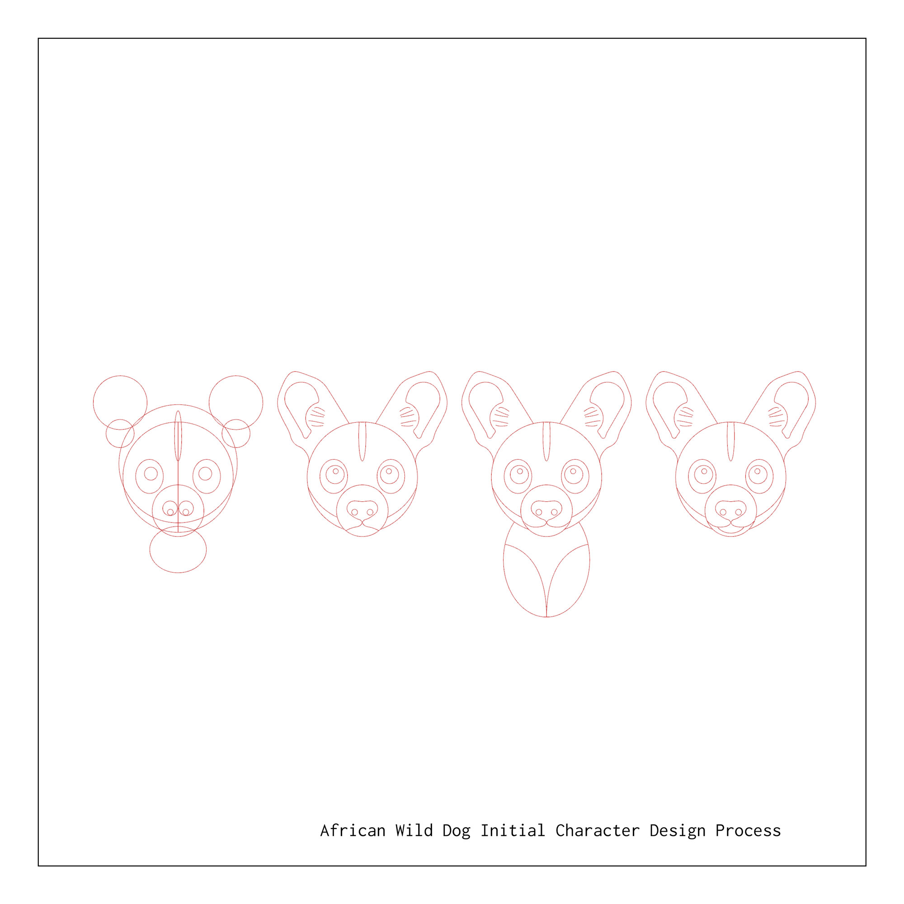
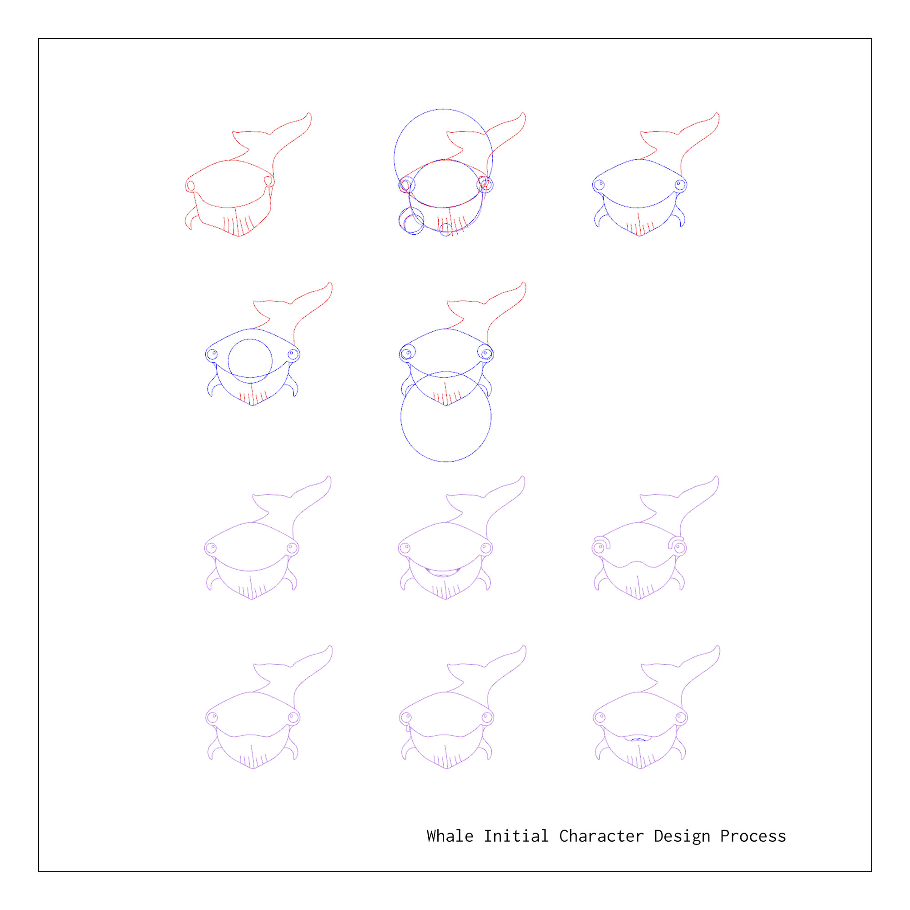
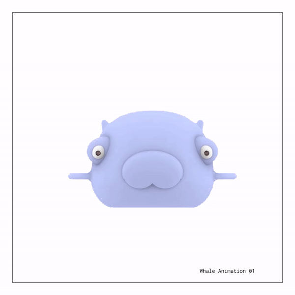
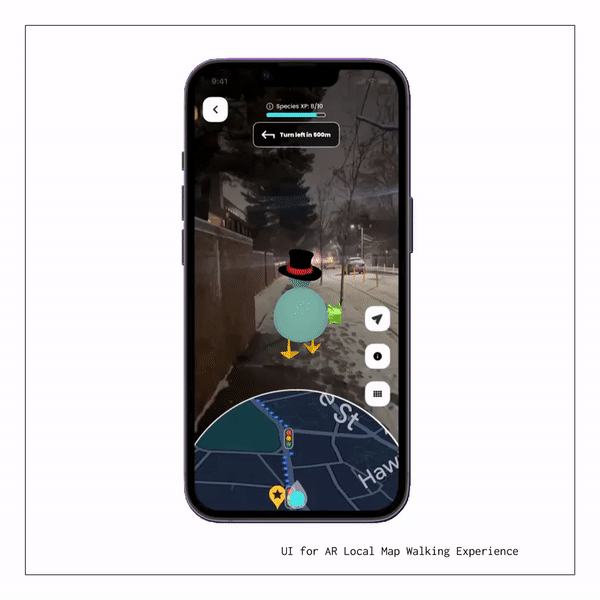
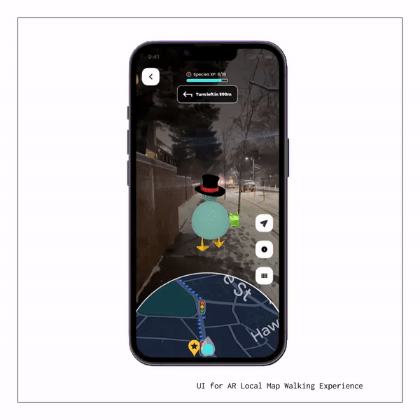

Pixel Pet
Fall 2022 | Professor Allen Sayegh | Created in partnership with Jake Walker and Tian Wei
Pixel Pet was born of a desire to harness the power of user gameplay for positive environmental and social impacts. We sought to challenge the destructive view of technology, particularly, technology dependence, utilizing user time as a tool for personal and global benefit.

 






Game Design
.
Engaging Consumerism
Much like the motivation of any app on the market, one of the goals was to raise capital, however in this circumstance, the capital would be directed towards environmental causes. We found appeals to altruism relatively ineffective. Rather, we aimed to target players using user psychology through multiple methods. The goal was to appeal to as many people as possible, keep them in the app for as long as possible, and likely convince them to spend real world currency on in-app goals.
Rather than an app that simply educates the user and encourages them to donate, we approached our goals with the knowledge that individualism would garner a more active user base. Taking a page from Tamagotchi, we understood amazing the bond a user could develop with a collection of pixels. Our model allows users to select their own pet. While some users would be swayed to return purely out of compassion for the environmental cause, a sense of ownership and responsibility to care for the pet would encourage many others. Further, we expand our audience through the inclusion of in-app missions.
Character design was carefully considered, following user psychology guidelines for both shape and color. Endangered animals were used as inspiration, to create simple yet relatable designs. Using rounded forms to guide the design, we were able to make African wild dogs and whales appear “cute”. We used colors that implied calmness, agreeableness, and positivity.
Customization serves as the primary driver for user-spending. Customization of the character through “skins”/clothing and of the AR play space via virtual furniture, encourages users to spend in-app coins or real currency for upgrades. It was important for accessibility reasons that real currency was not required to play, but would be encouraged to those who could afford it.


 

Human Interaction Model &
Global vs. Local Experiences
In an effort to educate and engage on global issues, we scale down to local communities. Larger themes are addressed through small community actions and interactions. While in-app games connect users globally, they have an option to click off the Pixel Pet World Map and click into their community maps. Using live personal locations, the user can follow missions on a local map of their neighborhood. Using AR, they can walk alongside their companion, completing small missions like collecting litter while learning about these issues at a global scale from their pets.
The AR interaction, also allows the user to designate their own home as their pet's virtual home. The user takes a photogrammetric or LiDAR scan of any room to load it to their phones and begin populating it with virtual objects. These virtually furnished versions of their own environments blends the boundaries of digital and reality. Walking through an augmented reality version of their own room, it becomes transformed. The phone now functions as a lens to a new environmentally conscious world, starting with their own home.
Refer to the video for many examples of guided interaction.
Social Impact
Beyond environmental impacts through in game education and fundraising, we plan to create positive social impact by bringing communities together. Our AR neighborhood exploration tool encourages people to step outside and be active to play, walking alongside their pet. Certain in-game challenges feature collaborative missions where friends can pair up and play together. This functions not only to create a social space via the app, but to encourage user acquisition from peer-to-peer contact.